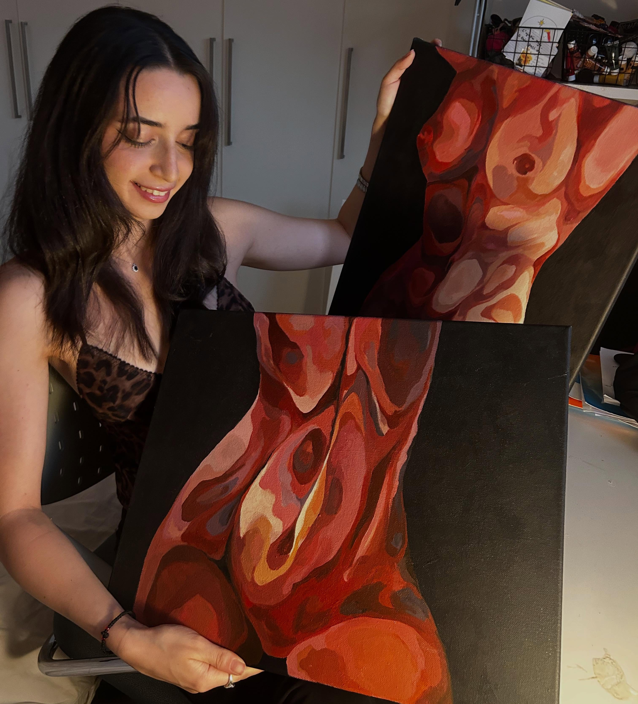

Selected Works · 2018–2026
The Scent of Light
"Creating a melting illusion in each body through harmonically blended colours, each body has its unique emotional texture, or, its own scent."
About
Stella Panayiotidou is a Cypriot artist exploring the sensory experience of the human body. From an early age, Stella has been deeply interested and inspired by the human essence. How does a human process feelings internally, and how does someone convey themselves through space? Those questions, dominating her thoughts, led her into doing her Bachelor’s degree in Psychology, and her Master’s degree in Neuroscience. The more she learns by academic knowledge, the more curious she gets about the questions which only art can answer. Thus, Stella kept painting over the years of her studies, seeking an answer to those yet unanswered questions. Through her figurative art, she explores the human on a different level of understanding. Creating a melting illusion of each body through harmonically blended colours, each body has its unique emotional texture, or, its own scent. Her figures are almost like in the real world, but always with a hint of curiosity.

Gallery
Contact
For more information or additional content reach out to:
Email: stella@mnpcqs.com
Instagram: @stellap.art